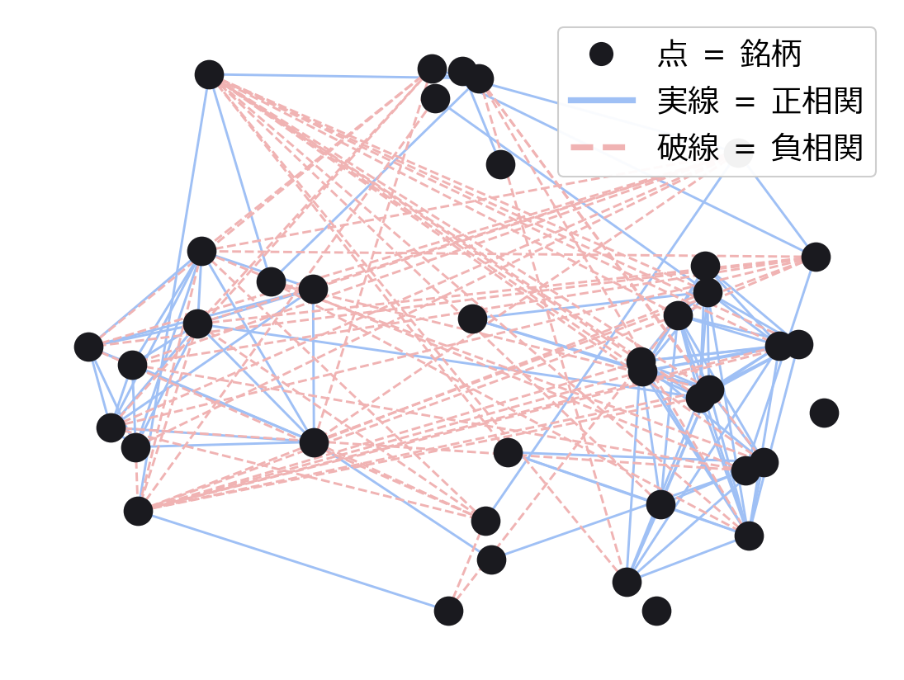

相関ネットワークの位相解析
銘柄ネットワークの"形"から
市場の構造変化を見る
40銘柄の相関を毎日ネットワーク化し、2つの位相的な指標で構造の変化を追う
学部3年 ・ 赤塩
研究の流れ
価格 → 相関でネットワーク化 → 2指標で形を測る → 構造変化を検知 → デモ口座で自動運用。この流れを毎日まわす。
結果① 確実
2指標はほぼ無相関
「穴の量」と「矛盾の数」は独立した情報
結果② 確実
主因は天然ガス
4つの暴落すべてで寄与が上位
結果③ 確実
最大下落 −20% ↔ −42%
矛盾指標で避けると下落は約半分（vs ランダム）
● 確実 … 検証済み◐ 限界 … 条件つき・今後
背景
価格ではなく「つながりの構造」を見る
市場の分析は普通、価格や出来高を使う。この研究では、銘柄同士がどう連動するかという"つながりの構造"と、その変化を見る。
問い
研究の問い
銘柄同士のつながりをネットワークにしたとき、
その"形"の変化から市場の構造変化を捉えられるか。
株・為替・金・原油など40銘柄の連動を毎日ネットワーク化し、その形の変化を時系列で追った。
02
2つの指標
ネットワークの形を測る2つのものさし
前提
市場をネットワークにする
40銘柄を 点、相関の高いペアを 線 で結び、1枚のネットワークにする。

40銘柄の相関ネットワーク（点＝銘柄、線＝相関の高いペア）。この形が日々変わる。
指標①
指標① 穴の持続（寿命）
市場のつながりに "穴（隙間）" ができることがある。数より大事なのは本物の穴かどうか——つながりの基準を多少変えても残る（持続する）穴＝本物、すぐ消える穴＝ノイズ。本物の穴がどれだけあるかを測る。
数学では「持続ホモロジー（H₁）」と呼ぶ。
指標②
指標② 矛盾の数（符号付きサイクル）
線の +（同方向）/ −（逆方向） を見て、符号のつじつまが合わない三角形を数える。多いほど構造がねじれている。
「友達の友達は友達のはずが敵」というバランス理論の考え方。
2指標の組み合わせ
判断は「ズレ」で見る
2つの指標は独立——同じネットワークから別々の情報を取る。だから組み合わせると意味がある。
判断には"穴"と"矛盾"の差（ズレ）を使う。
同じ尺度に揃えて矛盾から穴を引く。矛盾だけが突出した日＝危険サインとして、株を避けるかを判定する。
単独の指標より、2つの独立な情報の「ズレ」を見るほうが、本当の異常を捉えやすい。
結果のあらまし
- 2つの指標は独立していた（片方からもう片方は予測できない）
- 構造変化の主因は天然ガス（米国株ではない）
- 矛盾が高い日に株を避けると、最大下落が約半分になった
◐ 限界 暴落を予知するのではなく、始まった直後の初動を捉える段階（ただし恐怖指数VIXよりは早い）。
新規性について
手法（持続ホモロジー・構造バランス）は確立した既存手法で、市場応用にも先行研究がある。新しい手法ではなく、既存手法の統合・自分のデータでの実証・厳密な検証がこの研究の中身。
検証の詳細（偶然でないかの確認・バックテスト・限界）は 研究内容タブ、毎朝動いている実物は 実装デモタブ に。
研究として
- 他の市場・他の期間でも同じ結果が出るか（一般化）
- 2つの指標の関係をより厳密に
理論として — 中身を支える数学を深める
本体は代数トポロジー。入口は線形代数だけで立てる。学ぶ順:
- 土台：線形代数（しっかり）→ 点集合トポロジー・群論の基礎
- 代数トポロジー（ホモロジー / コホモロジー）— 「穴」も「矛盾」もこの中身
- 持続ホモロジー / TDA（filtration・persistence・barcode・安定性）
- 符号付きグラフ・スペクトルグラフ理論（signed Laplacian・balance↔コホモロジー）— 「矛盾」の代数side
- （発展）層・圏論 — 上をまとめる高次の言語（前提ではなく後から少しずつ）